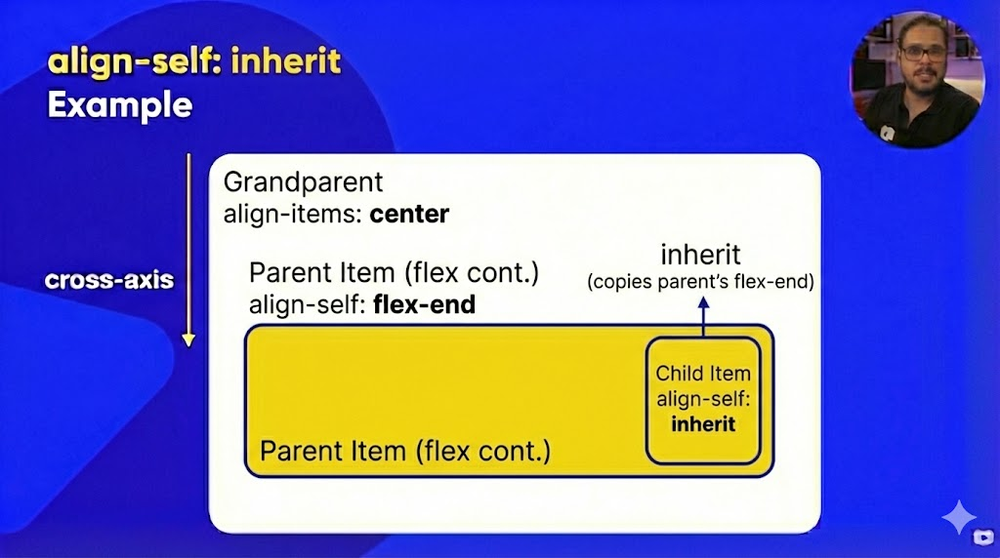
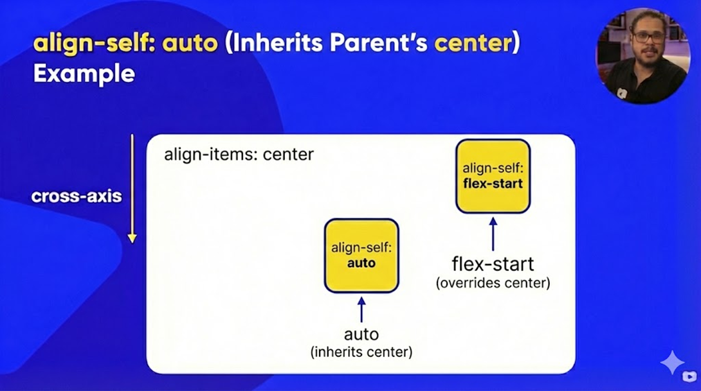
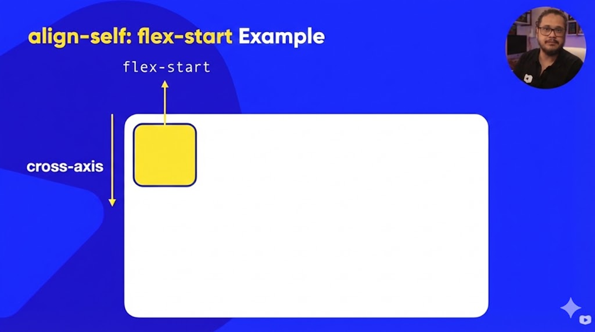
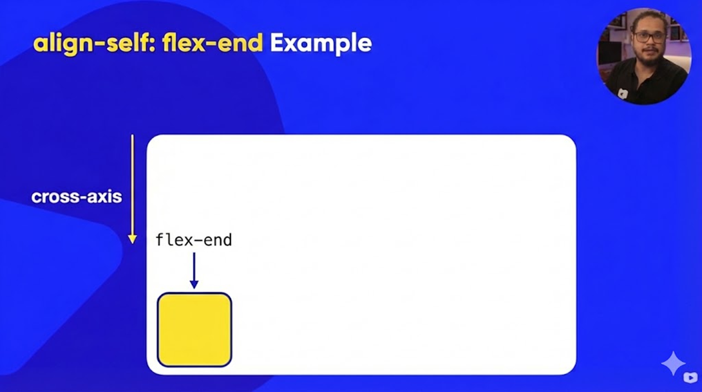
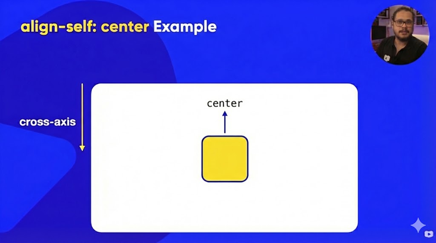
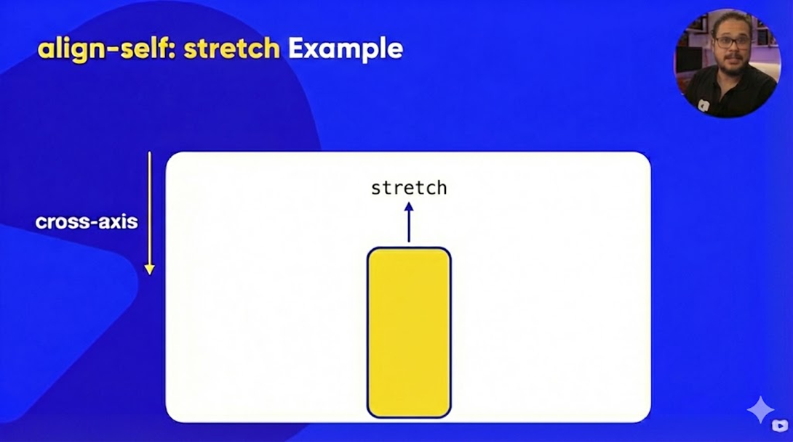

Todos os align-self juntos

A propriedade align-self é usada em itens flex (filhos) para
definir o alinhamento individual de um elemento no eixo transversal
(cross-axis). Ela permite sobrescrever o valor definido pelo
align-items do container, controlando o posicionamento de
cada item separadamente.
A
B
inherit
inherit
C
auto
auto
D
flex-start
flex-start
E
flex-end
flex-end
F
stretch
stretch
G
center
center
align-self: inherit
A
B
C

O item herda o alinhamento definido pelo align-items do container.
align-self: auto (Padrão)
A
B
C

Valor padrão. Segue o alinhamento do container pai.
align-self: flex-start
A
B
C

Alinha o item no início do eixo transversal.
align-self: flex-end
A
B
C

Alinha o item no final do eixo transversal.
align-self: center
A
B
C

Centraliza o item no eixo transversal.
align-self: stretch
A
B
C

O item ocupa toda a altura disponível do container.